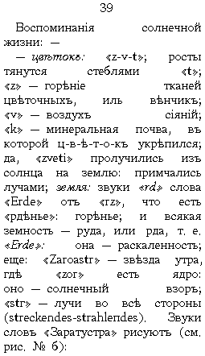
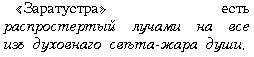

Glossolalia (Section 39)
GLOSSOLALIA

Reminiscences of the solar life are: ---- a tiny flower [tsvetok]: "z-v-t"; growths stretch out their stalks "t"; "ts" is -- the burning of floral threads, or a corolla; "v" is -- the air of shining things; "k" is -- the mineral soil, in which the ts-v-e-t-o-k strengthened; yes, "tsveti" [flowers] radiated from the sun to the earth: the rays hastened along their way; earth; the sounds "rd" of the [German] word "Erde" from "rz", that is "glowing red" [rdenye]: burning; and everything earthy is -- ore [ruda], or rda, i.e. "Erde": it is -- something scorched; and even more: "Zaroaster" is -- the star of the morning -- where "zor" is the nucleus/core: it is -- the sun's gaze; "str" are -- rays in all directions (streckendes-strahlendes). The sounds of the words depict "Zarathustra" (Cf. Ill. 6):

"Zarathustra" is the one with rays outstretched to everything from the spiritual light-heat of the soul.